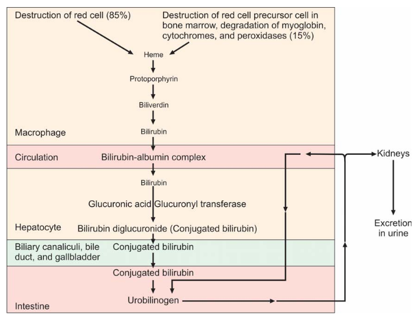
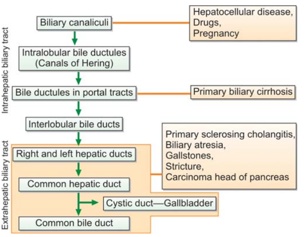
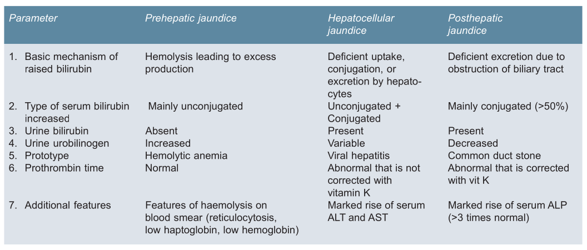
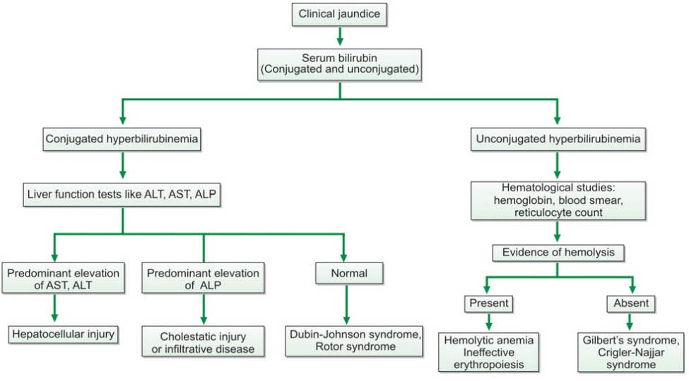
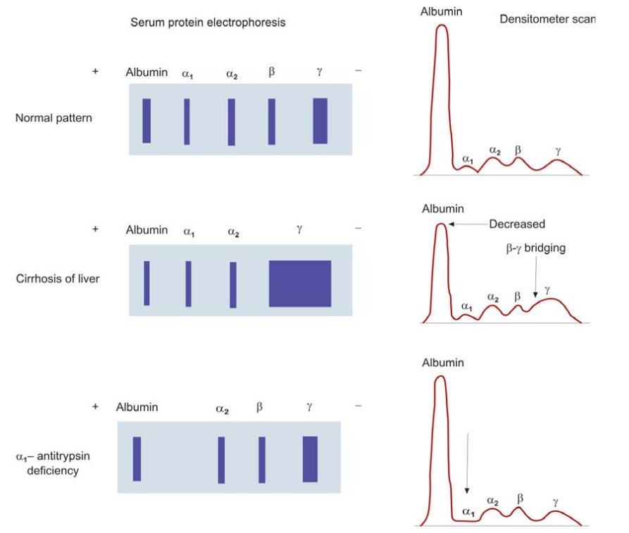
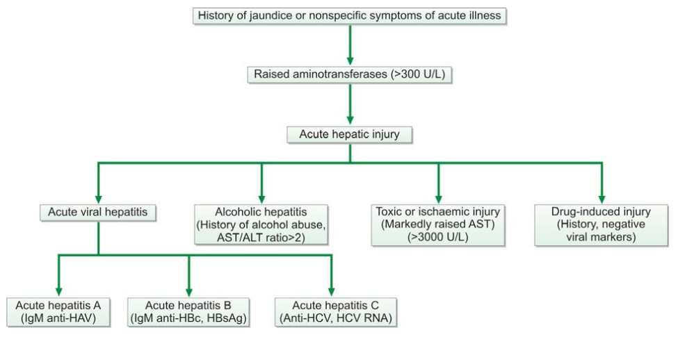
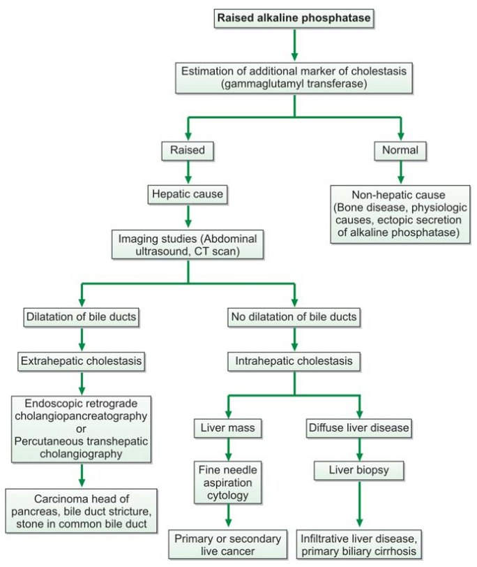
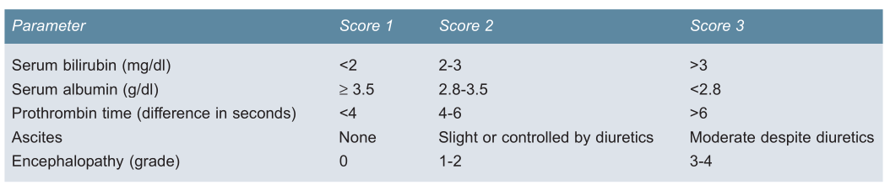
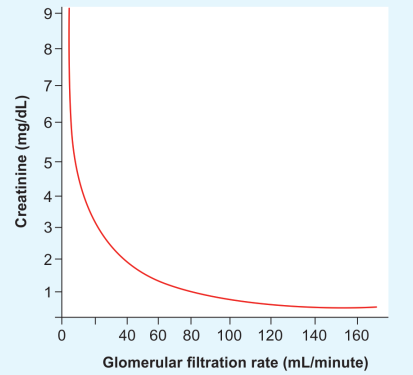

25 Clinical Pathology
25.1 Hematology Laboratory
25.1.1 Hematologic Malignancy
The latest classification of hematopoetic and limfoid malignancy was WHO 2016. This classification combine clinical, morphological, immunophenotype, cytogenetics and meolecular features.
25.2 Clinical Chemistry
25.2.1 Acid-Base Analysis
Understanding Acid-base analysis is essential for emergency/critical care.(Marino 2014)
Basic Concepts of Acid-Base
hydrogen ion concentration is expressed as pH:
\[ pH = Log (1/[H^+]) = - log [H^+] \]
The physiological range is 7.40, which corresponds to a \([H^+] = 40 nEq/L\)
The balance of of hidrogen ions in ECF is determined by partial pressure of CO2 and concentration of bicarbonate. The equation are as follows:
\[ [H^+ = 24 x (PCO_2 / HCO_3)] \] The dynamics of \(PCO_2 / HCO_3\) identifies the primary acid base disorders and the secondary responses. If the primary changes if the \(PCO_2\) then the disturbance if called respiratory acidosis or alkalosis, if the primary forces is the changes in \(HCO_3\) then it is metabolic acidosis or alkalosis. If there are primary forces, the the body will reacth with secondary responses to limit the changes in \(H^+\). This accomplished by changing the other component of \(PCO_2 / HCO_3\) ratio in the same direction. if the primary problem is an increase in PaCO2 (respiratory acidosis), the secondary response will involve an increase in HCO3, and this will limit the change in [H+] produced by the increase in PaCO2. Secondary responses should not be called “compensatory responses” because they do not completely correct the change in [H+] produced by the primary acid-base disorder.(Marino 2014)
Metabolic Acidosis
The secondary response to metabolic acidosis is an increase in minute ventilation (tidak volume and respiratory rate) thus resulting in decreased of \(PCO_2\). This response appears in 30 - 120 minutes, and can take 12 - 24 hours to complete. The magnitude of the response is defined by the equation:
\[ \Delta PaCO_2 = 1.2 \times \Delta HCO_3 \] Using the normal PaCO2 of 40 mmHg, a normal HCO3 of 24 mEq/L \[ Expected \ PaCO_2 = 40 - [1.2 times (24 - currect \ HCO_3)] \] For a metabolic acidosis with a plasma HCO3 of 14 mEq/L, the ΔHCO3 is 24 – 14 = 10 mEq/L, the ΔPaCO2 is 1.2 × 10 = 12 mm Hg, and the expected PaCO2 is 40 – 12 = 28 mm Hg. If the PaCO2 is > 28 mm Hg, there is a secondary respiratory acidosis. If the PaCO2 is < 28 mm Hg, there is a secondary respiratory alkalosis.
Metabolic Alkalosis
The secondary response to metabolic alkalosis is a decrease in minute ventilation and a subsequent increase in PaCO2.
\[ \Delta PaCO_2 = 0.7 x \Delta HCO_3 \] Using a normal PaCO2 of 40 mmHg and a normal HCO3 of 24 mEq/L, the above equation can be rewritten as follows:
\[ Expected \ PaCO_2 = 40 + [0.7 times (current \ HCO_3 - 24)] \] For a metabolic alkalosis with a plasma HCO3 of 40 mEq/L, the ΔHCO3 is 40 – 24 = 16 mEq/L, the ΔPaCO2 is 0.7 × 16 = 11 mm Hg, and the expected PaCO2 is 40 + 11 = 51 mm Hg.
Respiratory Acidosis
Respiratory Alkalosis
25.2.2 Liver Function Test
General Liver Function
- Excretion Functions (Test bilirubin, urobilinogen)
- Synthetic Functions (Serum protein, albumin, globuilin, prothrombin,ammonia)
- General Metabolic Functions
- Storage Site
- Hematopoeisis
- Catabolism of Steoroid Hormones
- Clearence of Exogenous Substances (Bromosulphthalein)
liver has a large amount of anatomical and functional reserve and capacity for rapid regeneration, functional deficiency becomes apparent if there is an extensive liver damage. Test for hepatic Injury (ALT, AST, GGT, ALP, 5’-nucleotidase)
Indication of Liver Function Test:
- Screen for liver disease;
- Identify the nature of liver disease (hepatocellular, cholestatic, or infiltrative);
- Assess severity and prognosis of liver disease; and
- Follow up the course of liver disease
Limitation Liver Function Test:
- Do not necessarily assess liver function
- Lack sensitivity (i.e. may be normal in some liver diseases like cirrhosis)
- Lack specificity (i.e. may be abnormal in non-liver disorders e.g. serum albumin is low in nephrotic syndrome and in cirrhosis)
Non hepatic Cause of Abnormal lver Function Test: Increased serum bilirubin: – Hemolysis – Ineffective erythropoiesis – Resorption of a large hematoma
Increased aminotransferases: – Muscle injury – Alcohol abuse – Myocardial infarction
Increased serum alkaline phosphatase: – Pregnancy – Bone disease
Low serum albumin: – Poor nutritional status – Proteinuria – Malabsorption – Severe illness causing protein catabolism
Excretion Function
Bilirubin metabolism
Biliruin is mostly (85%) from breakdown of HB of Old red cells in reticuloendothelial cells, mainly in Spleen. Normal serum bilirubin is less than 1 mg/dl. Common method to measure bilirubin are Diazo methods, which measure total bilirubin and conjugated bilirubin (thus named an direct bilirubin), while the unconjugated bilirubin were calculated from substraction of total bilirubin - conjugated bilirubin Other derived from premature destruction of red cell precusor in bone marrow. The Steps are following:

HB, degraded within macropahes to form heme and globin. Globin consist of amino acids, which are recycled. While Heme (iron + protoporphyrin) release iron, which is stored as ferritin. The protoporphyrin then converted to biliverdin, then to bilirubin.(Kawthalkar 2018)
Released bilirubin into the circulation and bind albumin, this called unconjugated bilirubin. It is insoluble to water, but lipid soluble.
Billirubin-albumin complex reaches the liver whee it is taken up by the hepatocytes. Albumin released back to the circulation.
Bilirubin then conjugated with glucoronic acid to form bilirubin monoglucoronid and diglucoronid (conjugated bilirubin). This Process is mediated by the ezyme glucoronyl transferase. Conjugated bilirubin is more soluble in water.
Conjugated bilirubin is secreted from the hepatocytes into biliary canaliculi, from where it passes into the bile duct and gallbladder along with bile.
When bilirubin reaches the large instensites, it is converted to urobilinogen by the baterial enzyme.
Most urobilinogen is excreted in feses as urobilin, thus coloring the feses yellow. A part of urobilinogen is absorbed into the circlation from where it reaches the liver, taken up and reexcreted into the bile. Small amaount of urobilinogen in cleared in urine.
Jaundice or icterus referes to yellow discoloration of skin, screa and mucous membranes due to increased level of serum bilirubin. Jaundice will clinicaly evident when serum bilirubin level exceeds 2.0 mg/dL.
- According to type of dominant bilirubin:
A. Predominant unconjugated hyperbilirubinemia
If > 85% of total is unconjugated bilirubin or indirect bilirubin. The cause are hemolysis, ineffective eryhtropoeisus, resorption large hematome, gilbert syndrome.
B. Predominant conjugated hyperbilirubinemia
If > 50% of total is conjugated or direct bilirubin. Cause are hepatitis, cirrhosis, cholestasis, drugs (anabolic steroid, oral contraceptives), toxin, dubin johnson syndrome, rotor syndrome
C. Mixed (Conjugated and Unconjugated)
if conjugated bilirubin is 20-50% of total, it may results from viral or alcoholic hepatisis.
- According to site of disease

A. Prehepatic There is excessive formation of bilirubin exceeding the capacity of the liver to conjugate it for excretion. The dominant bilirubin is unconjugated. Bilirubin is absent in urine, since of is water insoluble. Urobilinogen is increased in urine and feses. Jaudice is usually mild (total bilirubin usually < 5.0 mg/dl, conjugated is < 15% of total). The cuase is usually hematological problem.
B. Hepatic
Both Unconjugated and Conjuated are increased. mainly increased unconjunjugated 1. defective uptake 2. defective conjugation 3. physiologic jaundice (newborn)
mainly Conjugated ilirubin 1. Hepatocellular disease: Liver enzume increase. Biliruibin is around 4.0 s.d 8.0 mg/dl. Conjugated bilirubin is 20-50% of total bilirubin. In hepatocellular injury, both conjugated and unconjugated bilirubins are increased. Unconjugated bilirubin is increased due to reduced ability of liver cells to conjugate bilirubin. Conjugated bilirubin is raised from cholestasis due to hepatocyte swelling.
- Intrahepatic Cholestasis: In intrahepatic cholestasis, there may be (1) impairment of secretion of bilirubin from hepatocytes into the biliary canaliculi; (2) obstruction of bile flow in canaliculi by swollen hepatocytes;or (3) damage to intrahepatic canaliculi.
Drugs commonly associated with cholestatic injury are oral contraceptives, anabolic steroids, oral anti-diabetics, phenothiazines, and erythromycin.
Primary biliary cirrhosis, there is autoimmune destruction of intrahepatic bile ducts. It predominantly occurs in middle-aged, females and is characterized by chronic eleva- tion of alkaline phosphatase and positive anti-mitochondrial antibody in serum.
Primary sclerosing cholangitis is an autoimmune disorder occurring in young to middle-aged men in whom there is inflammation and destruction of both intrahepatic and extra-hepatic bile ducts. Associated inflammatory bowel disease is often present. Serum alkaline phosphatase is elevated and many patients have circulating perinuclear antineutrophil cytoplasmic antibodies.
C. Post Hepatic
Obstruction of extrahepatic biliary tract prevents flow of bile into the duodenum. This causes “regurgitation” of conjugated bilirubin into the circulation. (Biliary canaliculi distend and rupture due to backpressure of bile and conjugated bilirubin escapes into the sinusoids). Conjugated bilirubin is usually >50% of total in posthepatic jaundice. Urinary and fecal urobilinogen are decreased, faeces are clay-colored, and bilirubin (being conjugated and water-soluble) appears in urine. Cause of Posthepatic Jaundice:
- Carcinoma of head of pancreas
- Carcinoma of ampulla of Vater
- Secondaries in porta hepatis
- Gallstones in or stricture of common bile duct

Clinial Algorithm of Jaundice
Normal serum bilirubin is less than 1 mg/dl. conjugated bilirubin is 10% or less, while unconjugated bilirubin is 90% or more. This is because conjugated bilirubin is rapidly secreted into the bile after its formation and removed through the gut. Conjugated bilirubin is composed of blirubin glucuronide, bilirubin diglucuronide, and delta (δ) bilirubin. Delta bilirubin represents bilirubin covalently bound to albumin in circulation. Normally, δ bilirubin is absent or present in very small amount. In cholestasis, proportion of δ-bilirubin increases. Owing to its longer half-life, it is cleared slowly from circulation. Conjugated bilirubin is weakly bound to albumin, is water-soluble, and can be excreted in urine. Unconjugated bilirubin is tightly bound to albumin and is water-insoluble.

Synthetic Function
Markers of hepatic synthetic function are serum albumin and prothrombin time (PT). Hypoalbuminemia and a prolonged PT indicate a severe functional impairment of liver.
Protein Synthetic
Liver is the sole organ to synthesisze plasma protein, except gamma globulin which synthesized by Plasma Cell. Normal total serum protein in adults is about 5.5 - 8.0 gm / dl, albumin 3.5 - 5.0 which comprise the 60% of serum protein.
Test for protein in liver disease incldue total serum protein, serum albumin, calculation of albumin/globulin rtio (normal > 1.5) and serum electrophoresis.the common laboratory method to measure total protein is biuret and refractometer method.
Total serum protein level is affected by both and gamma globulins. In cirrhosis, decrease in albumin level is often compensated by increase in the level of gamma globulins; therefore, estimation of total serum proteins is of limited value in cirrhosis. Estimation of serum albumin and serum protein electrophoresis are more helpful.
Albumin is synthesized exclusively in liver and constitutes about 60% of total proteins in serum; therefore its estimation is an important investigation in liver disease. Half-life of albumin is about 20 days and therefore fall in its level in response to decreased synthesis is not immediately apparent. Therefore, in acute liver disease (e.g. viral hepatitis), there is little change in albumin level. Serum albumin level is low in chronic liver disease (cirrhosis) and correlates with synthetic capacity of hepatocytes; therefore, it is helpful in following progression of cirrhosis. Also, fall in serum albumin level correlates with severity of ascites. In cirrhosis and in chronic active hepatitis, serum gamma globulins are increased due to inflammation. Low albumin and raised gamma globulins in serum cause reversal of albumin/globulin ratio. Serum albumin is estimated by bromocresol green method
Causes of decreased serum albumin: • Decreased intake: malnutrition. • Decreased absorption: malabsorption syndromes. • Decreased synthesis: liver disease, chronic infections. • Increased catabolism: thyrotoxicosis, fever, malignancy, infections. • Increased loss: nephrotic syndrome, severe burns, protein-losing enteropathies, ascites • Increased blood volume: pregnancy, congestive cardiac failure.
Serum Protein Elektrophoresis: 1. In cirrhosis, albumin may be reduced and there may be polyclonal increase of IgG and IgA, with β-γ bridging. (IgA migrates between β and γ regions which obscures the demarcation between β and γ peaks). 2. In primary biliary cirrhosis, there is polyclonal increase of IgM. 3. In α1-antitrypsin deficiency (associated with cirrhosis) α1- globulin band is reduced. 4. In chronic active hepatitis, IgG is elevated.

Prothorombin Time (PT)
Most of the coagulation protein are synthesized in the liver. Vitamin K is required for the synthesis of factors II, VII, IX, X by the hepatocytes, thus it is called vitamin K dependent factors. Synthesis of the factors is deficient in hepatocellular disease. In Addition, in obstructive jaundice, vitamin K (a fat soluble vitamin) cannot be absorbed due to the absence of bile in the intentine.
PT measures three out of four vitamin K-dependent factors (II, VII, and X) and is prolonged in hepatocellular disease and in obstructive jaundice. Intramuscular injection of vitamin K corrects prolonged PT in obstructive jaundice but not in hepatocellular jaundice. To distinguish between a prolonged PT due to hepato- cellular disease from that due to cholestasis with fat malabsorption, PT is repeated after administration of vitamin K. Reduction of prolonged PT occurs in cholestatic liver disease, but not in hepatocellular disease. In acute fulminant liver failure, marked prolongation of PT is an unfavourable prognostic sign.
Blood Ammonia
Blood ammonia is mainly derived from GI tract. In the gut, bacterial enzyme act on nitrogen-containing foods to produce ammonia, which is carried to the liver via portal vein. In the liver, ammonia is converted to non -toxic urea in urea cycle.
Increased blood ammonia seen in: - Fulminant hepatic failure - cirrhosis - Reye’s Syndrome - “Shunting” of portal blood to systemic circulation - Gastrointestinal hemmorhage (there is increased of production of ammonia from blood proteins by bacterial enzymes). In hepatic disease, gastrointestinal hemmorhage is associated with increased risk of hepatic encepalopathy. - Inherited deficiensys of ure cycle enzymes.
If the ammonia is inreased, it might helful indicates a hepatic encepalopathy.
Test Hepatocellular Injury
Serum enzyme changes in liver disease result from hepatocyte damage and do not indicate hepatic functional capacity.
- Serum aspartate aminotransferase or AST (formerly called serum glutamic-oxaloacetic transaminase or SGOT)
- Serum alanine aminotransferase or ALT (formerly called serum glutamic-pyruvic transaminase or SGPT)
- Serum alkaline phosphatase or ALP
- γ-Glutamyl transferase or GGT (also called as - γ-glutamyl transpeptidase)
- 5’-nucleotidase (5’-NT)
Serum Aminotransferase (Transaminitis)
Both AST and ALT are sensitive marker of hepatocellular injury. ALT is cytosolic enzyme, AST is cytosolic and mitochondria. Normally, aminotransferases are present in serum at a low level. When necrosis or death of cells containing these enzymes occurs, aminotransferases are released into the blood and their concentration in blood increases. This level correlates with extent of tissue damage.
“Most marked elevations of ALT and AST (>15 times normal) are seen in acute viral hepatitis, toxin-induced hepatocellular damage (e.g. carbon tetrachloride), and centrilobular necrosis due to ischemia (congestive cardiac failure).”
Moderate elevation (5-15X normal) occurs due to chronic hepatitis, autoimmune hepatitis, alcoholic hepatitis, acute biliary tract obstruction, and drug induced hepatitis. Mild elevation (1-3 x normal) seen in cirrhosis, non-alcoholic steatosis and cholestasis.
Normal ratio AST/ALT is 0.7 to 1.4. Increased ratio (>2.0) is highly suggestive of alcoholic hepatitis, while ratio <1.0 is seen in acute viral hepatitis. ALT and AST are elevated in acute viral hepatitis even before the appearance of jaundice. Persistence of elevated ALT and AST beyond 6 months in a case of hepatitis indicates development of chronic hepatitis. Measurement of ALP is helpful in differentiation of hepatocellular jaundice from cholestatic jaundice.
Serum Alkaline Phospatase (ALP)
Alkaline phosphatase is distributed widely in various tissues like liver, bones, intestine, kidney, and placenta. In the liver, ALP, GGT, and 5’-NT are located normally on canalicular surface of hepatocytes. In cholestasis, accumulated bile acids dissolve canalicular side of hepatocyte membrane and enzymes are released in blood. Therefore, diseases that affect mainly hepatocyte secretion have elevated levels of ALP.
ALP is increased in most cases of cholestatic type of jaundice. While hepatocellular injury is characterized by marked elevation of ALT and AST, cholestasis is characterized by marked increase (more than 3 times normal) of ALP. Since there are many other sources of ALP apart from liver, simultaneous measurement of serum GGT and serum 5’-NT may be used to ascertain whether increase of ALP is of hepatic origin. Main cause of increased ALP due to hepatobiliary disease are: Bile duct obstruction, primary biliarry cirhosis, primary sclerosing cholangitis, infilstrative diseae of liver.
Disease of bones also could cause increased ALP. ALP present within osteoblasts, thus ALP increase when there is an increase osteoblastic activity. Pregnancy also increase ALP due to increased secretion from plancenta.
Serum Gamma-Glutamyl Transferase (GGT)
GGT presents in liver, pancreas, kidney, and prostate. The estimation of this enzyme is particularly useful in following: alcoholism (acute alcoholic hepatitis); Cholestasis (elevation of ALP and GGT significantly points toward liver disease); recovery from acute hepatitis (GGT is the last enzyme to return to normal, thus its normalization indicative favourable outcome)
Interpretation of Liver Function Test
Liver disease could broadly classified into two: hepatocellular and cholestasis.
1. Typical LFT profile in hepatocellular disease
• Marked elevation of AST and ALT (usually >500 IU)
• Mild increase of ALP (<3 times normal)
• Hyperbilirubinemia, if present, is of both conjugated and unconjugated type
• Chronic hepatocellular injury, aminotransferases are moderately elevated, and serum albumin is reduced.
If the LFT showed a hepatocellular disease, then next investigation is to detect underlying cause:
- Viral serology (viral hepatitis: IgM anti-hepatitis A antibody, hepatitis surface B antigen (HBsAg), antihepatitis C antibody),
- search for injurious drugs, toxins or alcohol,
- autoantibodies like antinuclear antibodies and anti-smooth muscle antibodies (autoimmune hepatitis), and serum ceruloplasmin (Wilson disease).

If cause is not detected in the presence of persistent elevation of aminotransferases, liver biopsy is performed (that may reveal chronic viral hepatitis, autoimmune disorders, Wilson disease, haemochromatosis, and infiltrative diseases)
2. Typical LFT profile in cholestatic jaundice
• Marked elevation of ALP (>3 times normal)
• Elevation of GGT and 5’-NT
• Mild or no increase of ALT and AST (usually <200 IU)
• Elevation of conjugated bilirubin
• The pattern of elevated ALP but normal serum bilirubin is seen in infiltrative diseases

In patients with cholestatic or infiltrative pattern of injury, imaging studies should be done for diagnosis of obstruction. If there is no evidence of obstruction, liver biopsy is usually done
Finally, Severity of liver disease is assessed by serum bilirubin, serum albumin, and prothrombin time. Child-Turcotte-Pugh classification is commonly used to assess severity of cirrhosis and is based on both clinical and laboratory parameters

Normal Values
Serum alanine aminotransferase (ALT, SGPT): 5-42 U/L
Serum aspartate aminotransferase (AST, SGOT): 5-40 U/L
Serum alkaline phosphatase (ALP):
• Children: 25-350 U/L
• Adult males: 25-120 U/L
• Adult females: 25-90 U/L
AST/ALT ratio: 0.7-1.4
Serum bilirubin:
• Total: 0.3-1.0 mg/dl
• Direct (Conjugated): 0-0.2 mg/dl
Serum proteins, total: 5.5-8.0 gm/dl
Serum albumin: 3.5-5.0 gm/dl
Serum globulins: 1.8-3.5 gm/dl
Albumin/Globulin (A/G) ratio: >1.5
Prothrombin time: 11-15 seconds
Plasma ammonia: 9-33 μmol/L
Serum gammaglutamyl transferase:
• Males: Up to 40 U/L
• Females: Up to 25 U/L
Serum protein electrophoresis:
Albumin 52-65%
α1 globulin: 2.5-5%
α2 globulin: 7-13%
β globulin: 8-14%
γ globulin: 12-22%
25.2.3 Disorder of Lipids
25.2.4 Cardiac markers
25.2.5 Coagulation Study
25.2.6 Renal Function Test
Kidney performs following functions: 1. maintenance of extracellular fluid volume & composition 2. Excretion of metabolic waste 3. Regulation of blood pressure 4. synthesis of erytheropoeitin 5. Production of Vitamin D3
Kidney functions affected by:
- Diffuse renal disease
- Pre-renal conditions
- Post-renal conditions
Classification of renal Function Test
A. Evaluation of Glomerular Function
B Evaluation of Tubular Function
A. Test to Evaluaste Glomerular Function
The best test to evaluate overall kidney functions is estimation of GFR. GFR varies with age, sex and BSA. Normal GFR in young adults is 120-130 ml/min per 1.73 m2 of body surface area. GFR declines progressively with age (due to arteriolosclerosis of glomeruli). After 40 years of age, there is a steady and progressive fall in the GFR at the rate of 1 ml/minute/year because of reduction in the number of glomeruli due to arteriolosclerosis.
Kdigo 2022 divide Chronic Kidney Disease into :
Stage 1; Kidney damage with Normal to increased GFR (GFR \(\geq\) 90 ml / min / 1.73 m2)
Stage 2; Kidney damage with Mildly reduced GFR (GFR 60 - 89 ml / min / 1.73 m2)
Stage 3; Moderately reduced GFR (GFR 30 - 59 ml / min / 1.73 m2)
Stage 4; Severely reduced GFR (GFR 15 - 29 ml / min / 1.73 m2)
Stage 5; Kidney Failure (GFR \(\leq\) 15 ml / min / 1.73 m2)
Kidney damage refers to presence of pathological abnormalities in blood or urine test or imaging studies. Symtoms usually present at GFR less than 60, which reflect loss of 50% Kidney Function.
GFR, glomerular filtration rate referes to the rate in ML/min at which a substance is cleared from the circulation by the glomeruli. The ability of the glomeruli to filter a substance from the blood is assessed by clearance studies. If a substance is not bound to protein in plasma, is completely filtered by the glomeruli, and is neither secreted nor reabsorbed by the tubules, then its clearance rate is equal to the glomerular filtration rate (GFR).
Clearance of a substance refers to the volume of plasma, which is completely cleared of that substance per minute; it is calculated from the following formula:
\[ clearance = \frac{UV}{P} \]
U: concentration of substance in urine (mg/dl)
V: volume of urine excreted in ml/min
P: concentration of substance in plasma (mg/dl)
all clearance value are adjusted to standard body surface area: 1.73 m2.
Clearance tests are cumbersome to perform, expensive, and not readily available. One major problem with clearance studies is incomplete urine collection.
The Particular “substance” are molecules which having the following properties: 1. It should be physiologically inert and preferably endogenous,
- It should be freely filtered by glomeruli and should be neither reabsorbed nor secreted by renal tubules,
3 It should not bind to plasma proteins and should not be metabolized by kidneys
4 It should be excreted only by the kidneys
Example of substance used to measure GFR are:
Exogenous: Inulin, Radiolabelled ethylenediamine tetraacetic acid (51Cr- EDTA), 125I-iothalamate
Endogenous: Creatinine, Urea, Cystatin C
Inulin Clearance
Inulin is inert polysacharide derived from the plant. It is called inert as it is freely filtered by the glomerulus, and is neither reabsorbed nor secreted by the tubules thus Inulin is an ideal agent for measuring GFR.
Protocol: A bolus dose of inulin (25 ml of 10% solution IV) is administered followed by constant intravenous infusion (500 ml of 1.5% solution at the rate of 4 ml/min). Timed urine samples are collected and blood samples are obtained at the midpoint of timed urine collection. Average inulin clearance for males is 125 ml/min/1.73 m2 and for females is 110 ml/min/1.73 m2.
Cystatin C Clearance
This is a cysteine protease inhibitor of MW 13,000, which is produced at a constant rate by all the nucleated cells. It is not bound to protein, is freely filtered by glomeruli and is not returned to circulation after filtration. It is a more sensitive and specific marker of impaired renal function than plasma creatinine. Its level is not affected by sex, diet, or muscle mass. It is thought that cystatin C is a superior marker for estimation of GFR than creatinine clearance.
Creatinine Clearance
Creatinine is being produced constantly from creatine in muscle. It is completely filtered by glomeruli and is not reabsorbed by tubules; however, a small amount is secreted by tubules.
A 24-hour urine sample is preferred. After getting up in the morning, the first voided urine is discarded. Subsequently all the urine passed is collected in the container provided. After getting up in the next morning, the first voided urine is also collected and the container is sent to the laboratory.
A blood sample for estimation of plasma creatinine is obtained at midpoint of urine collection.
Creatinine clearance is calculated from:
concentration of creatinine in urine in mg/ml (U),
volume of urine excreted in ml/min (V) (this is calculated by the formula: volume of urine collected/collection time in minutes e.g. volume of urine collected in 24 hours ÷ 1440)
concentration of creatinine in plasma in mg/dl (P).
Creatinine clearance in ml/min per 1.73 m2 is then derived from the formula UV/P.
Because of secretion of creatinine by renal tubules, the above formula overestimates GFR by about 10%. In advanced renal failure, secretion of creatinine by tubules is increased and thus overestimation of GFR is even more. Overestimation of GFR due to tubular secretion of creatinine is somewhat balanced by slight overestimation of serum creatinine by Jaffe’s reaction. To provide values closer to the actual GFR, cimetidine (which blocks secretion by renal tubules) can be administered before commencing urine collection
Creatinine clearance has few weakness:
Tubular secretion of creatinin that icrease as the kidney disease advance
Collection of urine often incomplete
Creatinin level is affected by protein intake and muscle mass
Creatinine level also affected by drugs, ie Cimetidine, Trimetophrim (which block tubular secretion of creatinine)
Tips: BUN and serum creatinine, by themselves, are not sensitive indicators of early renal impairment since values may be normal e.g. if baseline values of serum creatinine is 0.5 mg/dl, then 50% reduction in kidney function would increase it to 1.0 mg/dl. Thus clearance tests are more helpful in early cases. If biochemical tests are normal and renal function impairment is suspected, then creatinine clearance test should be carried out. If biochemical tests are abnormal, then clearance tests need not be done.
Urea Clearance
Urea is filtered by the glomeruli, but about 40% of the filtered amount is reabsorbed by the tubules. The reabsorption depends on the rate of urine flow. Thus it underestimates GFR, depends on the urine flow rate, and is not a sensitive indicator of GFR.
Estimation of Creatinine Clearance from serum creatinin by equation
Estimation of GFR from Serum creatinin depend on age, sex, body weight and serum creatinine value (and in some formula includes ethnicity). This is called as estimated GFR (eGFR).
- Modified Cockroft Gauld Equation (if SC Mg/Dl) \[ Creatine Clearance (ml/min) = \frac{(140 - age) \times (Weight) }{72 \times SC} \]
In females, the value obtained from above equation is multiplied by 0.85 to get the result.
Modification of Diet in Renal Disease (MDRD) equation for estimated eGFR: \[ eGFR (mL/min/1.73 m2) = 175 × (s. creatinine in mg/dL) – 1.154 × (Age in year)–0.203 × (0.742 if female) × (1.210 if African – American) \] This is applicable for adults between 18 and 70 years of age. It is more accurate than measured creatinine clearance from 24-hour urine collection and Cockroft-Gault equation. This is the most commonly used equation.
CKD-EPI (chronic kidney disease-epidemiology) equation: This is a recently introduced more accurate equation.
\[ eGFR (mL/min/1.73 m2) = 141 × min (Scr/k,1)a × max (Scr/k, 1)–1.209 × (0.993)Age × 1.018 (if female) × 1.159 (if black) \] where, Scr = Standardized serum creatinine (mg/dL) K = 0.7 (female) or 0.9 (male) a = –0.329 (female) or –0.411 (male), min = minimum of Scr/k or 1, max = maximum of Scr/k or 1, Age = years
- In Children, Schwartz formula is used for estimation of GFR:
\[ Estimated GFR = \frac{K \times Height (cm)}{Sc} \] k = 0.33 in preterm babies for the first year of life; k=0.45 for full term infants; for infants and children up to 12 years of age k is 0.55.
Disadvantages of estimated GFR: 1. GFR estimated by Ckockcroft-Gault and MDRD formulas tends to underestimate renal function at high levels of GFR (>60 mL/minute/1.73 m2);
- Values may be misleading in acute kidney injury, pregnancy, decreased muscle mass (e.g. paraplegia, muscle wasting disorders, critically ill, patients with cancer), increased muscle mass in athletes and body builders, unusual diets, and extremes of age or weight.
Blood Urea Nitrogen
Urea is produced in the liver from amino acids. Amino acids are utilized to produce energy, synthesize proteins, and are catabolized to ammonia. Urea is produced in the liver from ammonia in the Krebs urea cycle. Ammonia is toxic, and hence, is converted to urea, which is then excreted in urine.
The concentration of blood urea is usually expressed as blood urea nitrogen. This is because older methods estimated only the nitrogen in urea. Molecular weight of urea is 60, and 28 g of nitrogen are present in a gram mole of urea. As the relationship between urea and BUN is 60/28, BUN can be converted to urea by multiplying BUN by 2.14, i.e. the real concentration of urea is BUN × (60/28). Urea is completely filtered by the glomeruli, and about 30–40% of the filtered amount is passively reabsorbed in the renal tubules depending on the person’s state of hydration.
lood level of urea is affected by a number of nonrenal factors (e.g. dehydration, hypoperfusion of kidneys, high protein diet, protein catabolism, upper gastrointestinal hemorrhage, liver function, steroid administration, etc.), and therefore, utility of BUN as an indicator of renal function is limited. Also considerable destruction of renal parenchyma is required before elevation of blood urea can occur.
The term azotemia refers to the increase in the blood level of urea; uremia is the clinical syndrome resulting from this increase. Reference range for BUN in adults is 7–18 mg/dL. In adults >60 years, level is 8–21 mg/dL. laboratory method to analyze BUN are Diacetyl monoxime urea and urease-Brthol reaction.
Serum Creatinin
Creatinine is a nitrogenous waste product formed in muscle from creatine phosphate. Endogenous production of creatinine is proportional to muscle mass and body weight. Exogenous creatinine (from ingestion of meat) has little effect on daily creatinine excretion.
Serum creatinine is a more specific and more sensitive indicator of renal function as compared to BUN because: - It is produced from muscles at a constant rate and its level in blood is not affected by diet, protein catabolism, or other exogenous factors - It is not reabsorbed, and very little is secreted by tubules.
Significant kidney reserve, increase of serum creatinine level (from 1.0 mg/dl to 2.0 mg/dl) in blood does not occur until about 50% of kidney function is lost. Therefore, serum creatinine is not a sensitive indicator of early renal impairment (SC_gfr?). Laboratory report showing serum creatinine “within normal range” does not necessarily mean that the level is normal; the level should be correlated with body weight, age and sex of the individual. If renal function is absent, serum creatinine rises by 1.0 to 1.5 mg/dL/day.

Causes of decreased serum creatinine level:
Female sex.
Vegetarian diet.
Malnutrition, muscle wasting.
Increasing age (reduction in muscle mass)
Methods to estimate serum creatinin is Jaffe reaction and Enzymatic Methods. Reference range Adult males: 0.7–1.3 mg/dL. Adult females: 0.6–1.1 mg/dL.
BUN/Serum Creatinin Ratio
BUN/creatinine ratio to discriminate prerenal and postrenal azotemia from renal azotemia. Normal ratio is 12:1 to 20:1.
Causes of increased BUN/creatinine ratio (>20:1): 1. Increased BUN with normal serum creatinine:
- Pre-renal azotemia (reduced renal perfusion)
– High protein diet
– Increased protein catabolism
– Gastrointestinal hemorrhage.
- Increase of both BUN and serum creatinine with disproportionately greater increase of BUN:
Postrenal azotemia (Obstruction to the outflow of urine) Obstruction to the urine outflow causes diffusion of urinary urea back into the blood from tubules because of backpressure.
- Causes of decreased BUN/creatinine ratio (<10:1):
- Acute tubular necrosis
- Low protein diet, starvation
- Severe liver disease.
B. Test To Evaluaste Tubular Functions
Renal tubules efficiently reabsorb 99% of the glomerular filtrate to conserve the essential substances. Abnormality tubular function includes:
GLycosuria
Generalized Aminoaciduria
TUbular Proteinuria
Urinary concentration of sodium
Fractional excretion of sodum.
25.2.7 Urine Analysis
Macroscopy
Microscopy
Chemical
Albuminuria
Normally, a very small amount of albumin is excreted in urine. The earliest evidence of glomerular damage in diabetes mellitus is occurrence of microalbuminuria (albuminuria in the range of 30 to 300 mg/24 hours). An albuminuria >300 mg/24 hour is termed clinical or overt and indicates significant glomerular damage. Urine protein to creatinine ratio on a randome urine sample has been shown to correlate well with estimation of 24-hour urine protein.